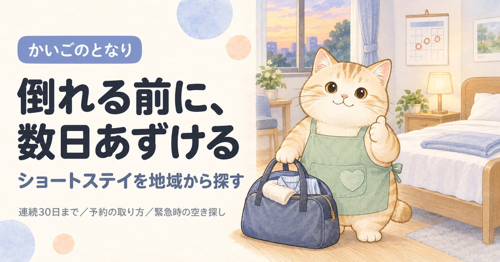

葛飾区のショートステイ一覧｜予約が取れる事業所の見分け方

東京都葛飾区で短期入所生活介護（ショートステイ）を探している方へ。東京都の指定を受けた25件から25件を連絡先つきで掲載し、そのうち特養の空床を使う空床利用型が4件あることまで示しました。ショートステイでいちばん多い壁は予約が取れないことです。同じ区の事業所でも、専用の床を持つところと特養の空きベッドを使うところでは、押さえやすさがまったく違います。
目次
葛飾区でショートステイを探すとき、最初に押さえること
葛飾区には東京都の指定を受けた短期入所生活介護の事業所が25件あります。区内の数が多いので、空床利用型を外しても候補が残ります。ショートステイでいちばん多い壁は、費用でも場所でもなく予約が取れないことです。特にお盆・年末年始・連休は数か月前から埋まります。
①ケアマネジャー、いなければ高齢者総合相談センターに相談 → ②葛飾区内の空床利用型ではない21件を先に当たる → ③空いている日を押さえてから予定を決める → ④初回は1泊2日で試す。
いきなり1週間あずけると、本人が混乱して次から拒否することがあります。
ショートステイの種類（生活介護と療養介護の違い）、連続利用の上限、緊急時の預け先、認知症のある方の受け入れはショートステイを地域から探すにまとめています。葛飾区に限らず共通の内容です。
葛飾区のショートステイ一覧
葛飾区内の短期入所生活介護事業所から25件を掲載しています（東京都公表・2026年9月1日時点）。区内には25件が指定を受けており、そのすべてを掲載しています。「特養の空床利用」「単独型」などの表示は東京都の一覧の事業所種別名です。空き状況は日々変わるため、この一覧では扱っていません。掲載順は事業所の優劣を示すものではありません。
1中川園
- 所在地
- 東京都 葛飾区 西水元４－５－１
- 運営法人
- 社会福祉法人仁生社
- 電話
- 03-3607-4060
- 事業所番号
- 1372200491
- 公式サイト
- jinseisha.jp（外部サイトが開きます）
2水元ふれあいの家
- 所在地
- 東京都 葛飾区 水元１－２６－２０
- 運営法人
- 社会福祉法人仁生社
- 電話
- 03-3607-7881
- 事業所番号
- 1372200509
- 公式サイト
- jinseisha.jp（外部サイトが開きます）
3水元園
- 所在地
- 東京都 葛飾区 西水元４－６－１
- 運営法人
- 社会福祉法人仁生社
- 電話
- 03-3607-4060
- 定員
- 100
- 事業所番号
- 1372200517
- 公式サイト
- jinseisha.jp（外部サイトが開きます）
4奥戸くつろぎの郷
- 所在地
- 東京都 葛飾区 奥戸３－２５－１
- 運営法人
- 社会福祉法人仁生社
- 電話
- 03-5670-1261
- 定員
- 8
- 事業所番号
- 1372200525
- 公式サイト
- jinseisha.jp（外部サイトが開きます）
5すずうらホーム
- 所在地
- 東京都 葛飾区 西新小岩３－３７－２７
- 運営法人
- 社会福祉法人清遊の家
- 電話
- 03-5670-3010
- 定員
- 8
- 事業所番号
- 1372200533
- 公式サイト
- seiyunoie.or.jp（外部サイトが開きます）
6特別養護老人ホーム西水元あやめ園
- 所在地
- 東京都 葛飾区 西水元２－２－８
- 運営法人
- 社会福祉法人武蔵野会
- 電話
- 03-3826-2951
- 事業所番号
- 1372200558
- 公式サイト
- care-net.biz（外部サイトが開きます）
7東四つ木ほほえみの里
- 所在地
- 東京都 葛飾区 東四つ木２－２６－１５
- 運営法人
- 社会福祉法人共生会
- 電話
- 03-5698-2341
- 定員
- 7
- 事業所番号
- 1372200996
- 公式サイト
- kyousei-kai.com（外部サイトが開きます）
8西水元ナーシングホーム
- 所在地
- 東京都 葛飾区 西水元６－１２－２
- 運営法人
- 社会福祉法人東翔会
- 電話
- 03-3607-0050
- 定員
- 3
- 事業所番号
- 1372201242
- 公式サイト
- care-net.biz（外部サイトが開きます）
9葛飾やすらぎの郷
- 所在地
- 東京都 葛飾区 新宿三丁目４番１０号
- 運営法人
- 社会福祉法人すこやか福祉会
- 電話
- 03-5648-8250
- 定員
- 5
- 事業所番号
- 1372201523
- 公式サイト
- sukoyaka-fu.or.jp（外部サイトが開きます）
10特別養護老人ホーム 癒しの里 青戸
- 所在地
- 東京都 葛飾区 青戸８－１８－１３
- 運営法人
- 社会福祉法人三幸福祉会
- 電話
- 03-5629-5843
- 定員
- 12
- 事業所番号
- 1372201887
- 公式サイト
- sanko-fukusi.or.jp（外部サイトが開きます）
11ショートステイかつしか苑
- 所在地
- 東京都 葛飾区 白鳥二丁目９番１８号
- 運営法人
- 社会福祉法人葛飾会
- 電話
- 03-6662-2220
- 事業所番号
- 1372202570
12社会福祉法人三幸福祉会特別養護老人ホーム癒しの里亀有
- 所在地
- 東京都 葛飾区 亀有２－６０－５
- 運営法人
- 社会福祉法人三幸福祉会
- 電話
- 03-5629-5866
- 事業所番号
- 1372203347
- 公式サイト
- sanko-fukushi.jp（外部サイトが開きます）
13SILVER SUPPORT 星にねがいを
- 所在地
- 東京都 葛飾区 細田４－２－８
- 運営法人
- 株式会社サンハート
- 電話
- 03-5693-4165
- 事業所番号
- 1372203354
- 公式サイト
- sunheart-care.jp（外部サイトが開きます）
14短期入所生活介護施設 こはるび
- 所在地
- 東京都 葛飾区 青戸七丁目３４番６号
- 運営法人
- 医療法人財団光善会
- 電話
- 03-3602-1011
- 事業所番号
- 1372203537
- 公式サイト
- e-kouzenkai.or.jp（外部サイトが開きます）
15ショートステイ葛飾敬寿園
- 所在地
- 東京都 葛飾区 新宿３－１９－１９
- 運営法人
- 社会福祉法人敬寿会
- 電話
- 03-3600-1551
- 定員
- 9
- 事業所番号
- 1372203859
- 公式サイト
- keijuen.or.jp（外部サイトが開きます）
16ショートステイ ル・ソラリオン葛飾
- 所在地
- 東京都 葛飾区 青戸４－１６－７
- 運営法人
- 社会福祉法人敬仁会
- 電話
- 03-3601-3711
- 定員
- 20
- 事業所番号
- 1372203883
- 公式サイト
- med-wel.jp（外部サイトが開きます）
17短期入所生活介護事業所 エトワール
- 所在地
- 東京都 葛飾区 新宿６－２－１３
- 運営法人
- 社会福祉法人藤寿会
- 電話
- 03-5876-1212
- 事業所番号
- 1372204535
- 公式サイト
- toujukai.jp（外部サイトが開きます）
18東かなまち桜園（介護予防）短期入所生活介護事業所
- 所在地
- 東京都 葛飾区 東金町２－１３－１０
- 運営法人
- 社会福祉法人清風会
- 電話
- 03-5876-5281
- 事業所番号
- 1372205938
- 公式サイト
- kanamachisakuraen.seifu-kai.jp（外部サイトが開きます）
19ショートステイ バタフライ ヒル細田
- 所在地
- 東京都 葛飾区 細田４－２０－１４
- 運営法人
- 社会福祉法人善光会
- 電話
- 03-5612-1717
- 事業所番号
- 1372205987
- 公式サイト
- zenkoukai.jp（外部サイトが開きます）
20ショートステイかつしか苑亀有
- 所在地
- 東京都 葛飾区 亀有１－６－１１
- 運営法人
- 社会福祉法人葛飾会
- 電話
- 03-6662-2223
- 事業所番号
- 1372206621
21アンブル宝町ショートステイ
- 所在地
- 東京都 葛飾区 宝町１－２－９
- 運営法人
- 社会福祉法人アストリー
- 電話
- 03-5654-8880
- 事業所番号
- 1372206993
- 公式サイト
- astory.jp（外部サイトが開きます）
22特別養護老人ホーム 第二奥戸くつろぎの郷
- 所在地
- 東京都 葛飾区 奥戸３－２５－２３
- 運営法人
- 社会福祉法人仁生社
- 電話
- 03-5654-6130
- 事業所番号
- 1372207751
- 公式サイト
- jinseisha.jp（外部サイトが開きます）
23スマイルホーム西井掘 短期入所生活介護
- 所在地
- 東京都 葛飾区 奥戸３－２４－１５
- 運営法人
- 社会福祉法人喜清会
- 電話
- 03-3692-8600
- 事業所番号
- 1372207819
- 公式サイト
- tokyokiseikai.or.jp（外部サイトが開きます）
24介護老人福祉施設ケアホーム葛飾
- 所在地
- 東京都 葛飾区 小菅１－３５－１０
- 運営法人
- 社会福祉法人平成記念会
- 電話
- 03-3602-5900
- 定員
- 18
- 事業所番号
- 1372208361
- 公式サイト
- katsushika.tokuyou.jp（外部サイトが開きます）
25ショートステイ 癒しの里西亀有
- 所在地
- 東京都 葛飾区 西亀有３－１８－６
- 運営法人
- 社会福祉法人三幸福祉会
- 電話
- 03-5647-7454
- 事業所番号
- 1372208452
- 公式サイト
- sanko-fukushi.jp（外部サイトが開きます）
上記25件は、2026-09-22に葛飾区および各事業者の公表情報で確認した内容です。営業時間・対応エリア・空き状況は変動しますので、連絡の前に必ず公式情報をご確認ください。掲載内容の訂正・削除は、お問い合わせからご依頼いただければ理由の説明なしで削除します。
掲載25事業所の内訳
葛飾区内で掲載している25事業所を、事業所の型・所在地・運営法人・開設からの年数の4つの軸で集計しました。事業所ごとの詳細は上の一覧をご覧ください。
事業所の型（予約の取りやすさに直結します）
掲載25件のうち特養の併設事業所型が18件と最も多く、特養の空床を使う空床利用型は4件です。ここが葛飾区で事業所を選ぶときのいちばん大きな違いです。空床利用型は掲載分の16%で、23区平均の11%と同じくらいです。
| 事業所の型 | 件数 | 予約するときに効いてくること |
|---|---|---|
| 特養の併設事業所型 | 18件 | 特別養護老人ホームに併設され、ショートステイ専用の床を持つ。定期的に使う予定が立てやすい |
| 特養以外の併設事業所型 | 3件 | 老人保健施設や有料老人ホームなどに併設されている |
| 特養の空床利用型 | 4件 | 特養の入所者用ベッドの空きを使う。本体が満床だとその分使えず、直前の予約は取りにくい |
所在町域
送迎のない事業所では家族が送り迎えするため、往復の距離がそのまま負担になります。葛飾区内は29の町域に分かれていて、掲載分がいちばん多いのは西水元（4件）です。
| 町域 | 掲載事業所 |
|---|---|
| 西水元 | 中川園、水元園、特別養護老人ホーム西水元あやめ園、西水元ナーシングホーム |
| 奥戸 | 奥戸くつろぎの郷、特別養護老人ホーム 第二奥戸くつろぎの郷、スマイルホーム西井掘 短期入所生活介護 |
| 新宿 | 葛飾やすらぎの郷、ショートステイ葛飾敬寿園、短期入所生活介護事業所 エトワール |
| 青戸 | 特別養護老人ホーム 癒しの里 青戸、短期入所生活介護施設 こはるび、ショートステイ ル・ソラリオン葛飾 |
| 亀有 | 社会福祉法人三幸福祉会特別養護老人ホーム癒しの里亀有、ショートステイかつしか苑亀有 |
| 細田 | SILVER SUPPORT 星にねがいを、ショートステイ バタフライ ヒル細田 |
| 宝町 | アンブル宝町ショートステイ |
| 小菅 | 介護老人福祉施設ケアホーム葛飾 |
| 東四つ木 | 東四つ木ほほえみの里 |
| 東金町 | 東かなまち桜園（介護予防）短期入所生活介護事業所 |
| 水元 | 水元ふれあいの家 |
| 白鳥 | ショートステイかつしか苑 |
| 西亀有 | ショートステイ 癒しの里西亀有 |
| 西新小岩 | すずうらホーム |
運営法人の種別
掲載25件のうち社会福祉法人（社協以外）が23件と最も多くなっています。区分は東京都の公表値をそのまま使っています。葛飾区でもショートステイは特養に併設されていることが多いため、社会福祉法人に寄ります。
| 法人の種別 | 件数 | 傾向 |
|---|---|---|
| 社会福祉法人（社協以外） | 23件 | 特別養護老人ホームなどに併設されていることが多く、設備が整っている |
| 医療法人 | 1件 | 病院・診療所が母体。健康面の変化に気づいてもらいやすい |
| 営利法人 | 1件 | 株式会社・有限会社など。住宅街の中の小規模な事業所が多い |
公表されている定員
掲載25件のうち定員が公表されているのは10件で、いちばん小さい事業所が3床、いちばん大きい事業所が100床です。床数が少ないほど連休は早く埋まります。葛飾区で定期的に使うなら、床数の多い事業所も候補に入れてください。
| 定員 | 件数 | 予約するときの目安 |
|---|---|---|
| 10床以下 | 6件 | 連休はすぐ埋まる |
| 11〜20床 | 3件 | 都内で標準的な規模 |
| 21床以上 | 1件 | 直前でも空きが出ることがある |
定員は厚生労働省の公表データの値で、特養に併設されている事業所ではショートステイ用の床だけを指すとは限りません。実際に何床押さえられるかは事業所にご確認ください。
開設からの年数
掲載25件のうち、指定から20年以上たっている事業所は14件、最も古い事業所は約26年前の指定です。古い事業所ほど常連の利用者が予約枠を押さえていることがあり、葛飾区でも新しいところのほうが空きを見つけやすい場合があります。
| 指定を受けた時期 | 件数 | 見るときの目安 |
|---|---|---|
| 3〜10年 | 4件 | 運営が固まってきた時期。空き状況は事業所ごとに差が大きい |
| 10〜20年 | 7件 | 利用者が定着している。空きは出にくい |
| 20年以上 | 14件 | 制度の初期から続いている。地域での評判を聞きやすい |
指定年月日は東京都が公表している指定事業所一覧の値です。事業所の移転や法人変更で指定を取り直している場合があるため、実際の営業年数とは一致しないことがあります。
葛飾区で埋まっていたときに当たる、隣の区
ショートステイは葛飾区以外の事業所にも申し込めます。デイサービスと違って毎日通うわけではないので、少し遠くても成り立ちます。葛飾区に隣接する5区を合わせると105件あり、葛飾区内の25件と比べて選べる幅がかなり広がります。
葛飾区で介護保険を使う場合の自己負担
葛飾区を含む東京23区は介護報酬の地域区分で最も高い1級地にあたり、1単位＝11.40円です。短期入所生活介護の基本報酬は、その事業所が単独型か併設型かで分かれます。葛飾区の掲載25件では25件が特養などに併設されており、併設型の単位数で算定されることが多くなります。
| 要介護度 | 併設型 | 1割負担 | 単独型 | 1割負担 |
|---|---|---|---|---|
| 要介護1 | 603単位 | 約687円 | 645単位 | 約735円 |
| 要介護2 | 672単位 | 約766円 | 715単位 | 約815円 |
| 要介護3 | 745単位 | 約849円 | 787単位 | 約897円 |
| 要介護4 | 815単位 | 約929円 | 856単位 | 約975円 |
| 要介護5 | 884単位 | 約1,007円 | 926単位 | 約1,055円 |
従来型個室と多床室は同じ単位数です。ユニット型個室はこれより高く、葛飾区の1級地だと要介護3の1割負担で1日約965円（併設型）になります。上の金額は基本報酬だけで、加算が別に上乗せされます。葛飾区の事業所がどの区分で算定するかは申し込み時にご確認ください。
予約のときに葛飾区の事業所へ聞くこと
- 専用の床か、特養の空床利用か葛飾区の掲載25件のうち4件が空床利用型です。空床利用型は直前の予約が取りにくいので、定期的に使うつもりなら最初に確認してください。
- 何か月先まで予約を受け付けているか事業所によって「3か月前から」「2か月前の1日から」など受付開始日が違います。ここを外すと埋まります。
- 部屋は多床室か個室か、滞在費はいくらか基本報酬は同額でも滞在費が違います。負担限度額認定を持っているかも伝えてください。
- 服薬・医療的ケアへの対応と、キャンセル料インスリン、たんの吸引、経管栄養は断られることがあるので申し込みの段階で正確に伝えます。キャンセル料が何日前から発生するかも、葛飾区内の事業所ごとに違います。
よくある質問
葛飾区でショートステイを使うには、まず何をすればいいですか？
担当のケアマネジャー、いなければ高齢者総合相談センターに相談してください。ショートステイもケアプランに位置づける必要があるため、葛飾区の事業所に直接申し込むのではなくそこが入口になります。要介護認定を受けていない場合は、認定の申請から始まります。
葛飾区にショートステイは何件ありますか？
東京都が公表している指定事業所一覧では、2026年9月1日時点で葛飾区内に25件の短期入所生活介護事業所が指定を受けています。本ページではそのうち25件を連絡先つきで掲載しています。掲載分のうち4件が特養の空床利用型です。
葛飾区で予約が取れないときはどうすればいいですか？
まず空床利用型以外を当たってください。葛飾区の掲載25件のうち21件は専用の床を持つ事業所です。それでも埋まっていれば、日程をずらすか、葛飾区に隣接する区の事業所を当たります。葛飾区でもお盆・年末年始・連休は数か月前から埋まります。
葛飾区で自己負担はいくらくらいですか？
葛飾区は介護報酬の地域区分で1級地（1単位＝11.40円）にあたります。従来型個室・多床室の併設型なら1割負担で要介護3が1日約849円、要介護5が1日約1,007円が目安です。ただし葛飾区でもこれとは別に食費と滞在費が全額自己負担で加わるため、総額はこの倍以上になることがあります。住民税非課税世帯などは負担限度額認定で上限をつけられます。
葛飾区のショートステイは何日まで連続で使えますか？
葛飾区でも全国共通で、連続利用は30日までです。日数の管理はケアマネジャーがしてくれます。上限の詳しい決まりはショートステイのしくみのページにまとめています。
認知症があっても葛飾区のショートステイを使えますか？
使えます。葛飾区の掲載25件のうち25件は特別養護老人ホームなどに併設されており、認知症の方の受け入れに慣れているところが多くなります。ただし環境が変わると混乱が強く出る方もいるため、葛飾区でもまず1泊2日から試してください。夜間の見守り体制は事業所ごとに違います。
葛飾区の高齢化率は24.0%、要介護認定を受けている人は25,587人
葛飾区の人口472,558人のうち、65歳以上は113,332人（24.0%）です。23区の平均20.2%より高い水準にあたります。65歳以上のうち66,780人は75歳以上で、介護が必要になる人が増えはじめる年代です。
| 項目 | 葛飾区 |
|---|---|
| 総人口 | 472,558人 |
| 65歳以上（高齢化率） | 113,332人（24.0%） |
| うち75歳以上 | 66,780人（14.1%） |
| 第1号被保険者（65歳以上） | 113,934人 |
| 要支援1・2の認定 | 6,447人 |
| 要介護1〜5の認定 | 19,140人 |
| 認定率（認定者÷第1号被保険者） | 22.5%（23区平均21.9%） |
葛飾区で要介護・要支援の認定を受けているのは25,587人、区内のショートステイは25件なので、1事業所あたり1023人という計算になります。認定者が全員このサービスを使うわけではないため、混み具合そのものではありません。
認定者数は第1号被保険者（65歳以上）の再掲値で、40〜64歳の方は含みません。出典はページ下部に記載しています。
葛飾区の町域一覧（対応エリアの目安）
葛飾区の町域は29。五十音では8行にわたり、最も多いのはは行の8件です。掲載事業者の対応範囲は町域単位で分かれているため、問い合わせのときは「葛飾区小菅」のように町名まで伝えてください。
- 青戸
- 奥戸
- お花茶屋
- 金町
- 金町浄水場
- 鎌倉
- 亀有
- 小菅
- 柴又
- 白鳥
- 新小岩
- 高砂
- 宝町
- 立石
- 新宿
- 西亀有
- 西新小岩
- 西水元
- 東金町
- 東新小岩
- 東立石
- 東堀切
- 東水元
- 東四つ木
- 細田
- 堀切
- 水元
- 南水元
- 四つ木
※町域ごとの事業者ページは、掲載できる事業者が3件以上そろった町域から順次公開します。
葛飾区の他のサービスを探す
東京23区からショートステイを探す
- 東京都福祉局「居宅サービス事業所一覧」（CC BY 4.0）
- 厚生労働省「介護サービス情報公表システム」オープンデータ（2026年6月30日時点／定員・公式サイト）
- 厚生労働省「指定居宅サービス介護給付費単位数等」短期入所生活介護費（令和6年度改定後・令和8年6月改定を経て有効）／介護報酬の地域区分（1級地・1単位11.40円）
- 葛飾区「高齢者総合相談センター一覧」
- 日本郵便 郵便番号データにもとづく葛飾区の町域一覧
- 東京都総務局統計部「住民基本台帳による東京都の世帯と人口」（令和8年1月1日現在／年齢3区分別人口・5歳階級別人口）
- 東京都福祉局「介護保険事業状況報告（月報）」令和8年6月分（保険者別・第1号被保険者数／要介護認定者数）
最終確認日：2026-09-22／制度・料金は改定される場合があります。ご利用前に各窓口・各事業者で最新情報をご確認ください。